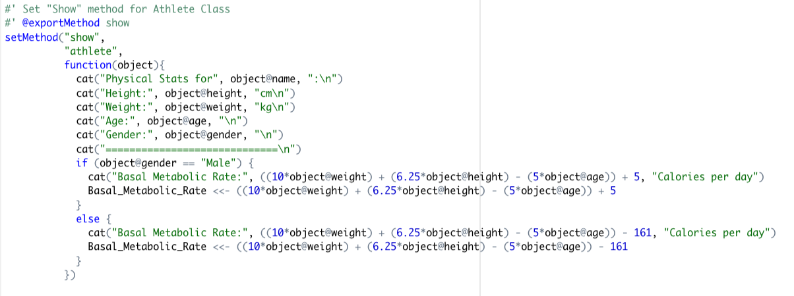
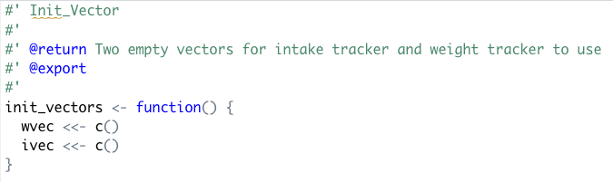
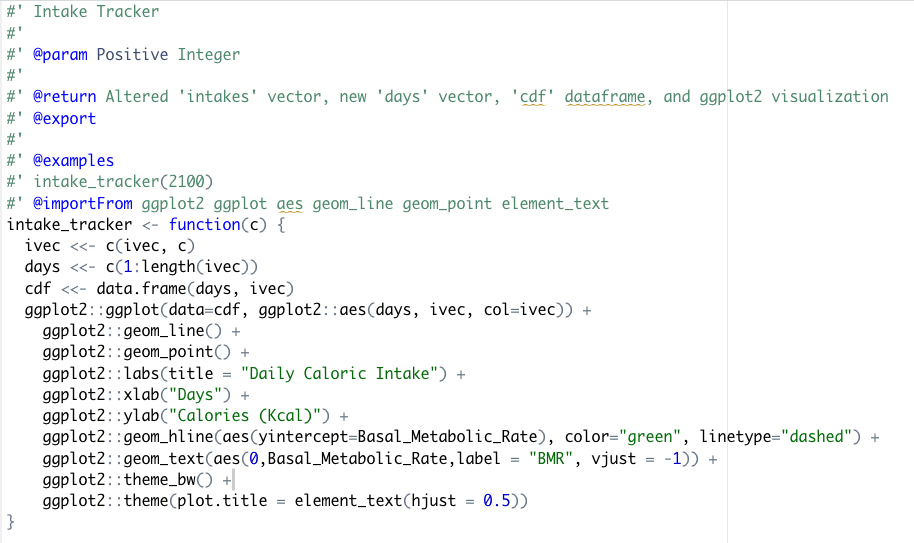
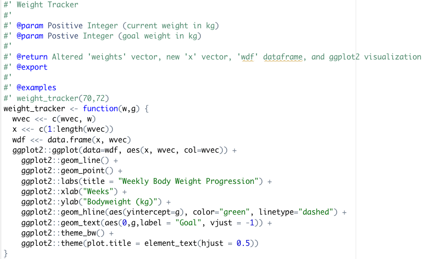
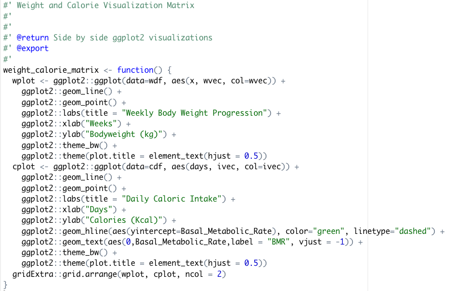

For my final project I decided to have some fun and make something in R that most people wouldn't use the software for, but may find useful. I created a simple fitness tracker, best explained by viewing this markdown file. The video below shows roughly the same process but in real time.
The full package and additional documentation can be found on my github page.
The "athlete" class definition:
The customized "show" method for the "athlete" class: (Contains a simple if else statement based on the gender of the defined S4 athlete class for calculation of BMR. Equations were sourced from wikipedia.)
The init_vector() function that creates two empty vectors for use by the other functions in the package:
The intake_tracker() function:
The weight_tracker() function:
And finally, the weight_calorie_matrix() function:
